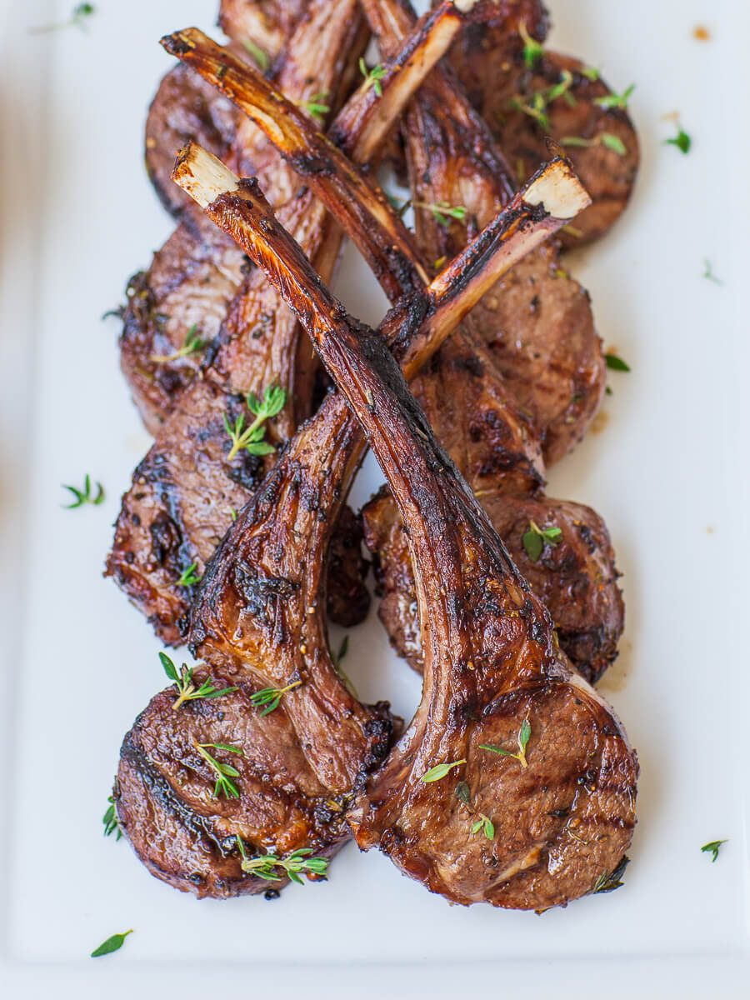

Lamp Chops with Garlic and Olive Oil

Description
A simple but delicious meat entree.
Ingredients
- 6 Tbsp. olive oil
- 2 cloves garlic, minced
- 1/2 tsp. salt
- 1/4 tsp. fresh-ground black pepper
- 8 lamb rib chops, about 1 inch think (about 2 3/4 lbs. in all)
Steps
- Light the grill or heat the broiler. In a shallow dish, combine 4 tablespoons of the oil with the garlic, salt, and pepper. Add the lamb chops and turn to coat.
- Grill over high heat or broil the lamb chops for 5 minutes, basting with the remaining 2 tablespoons oil. Turn and cook until done, about 5 minutes longer.
Return to main page